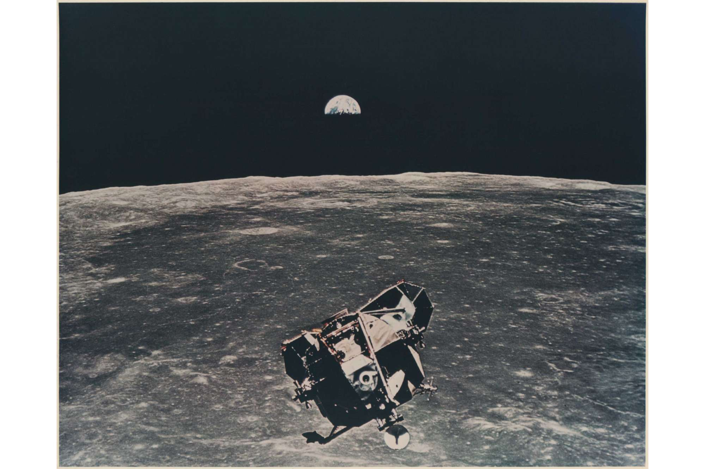
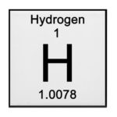
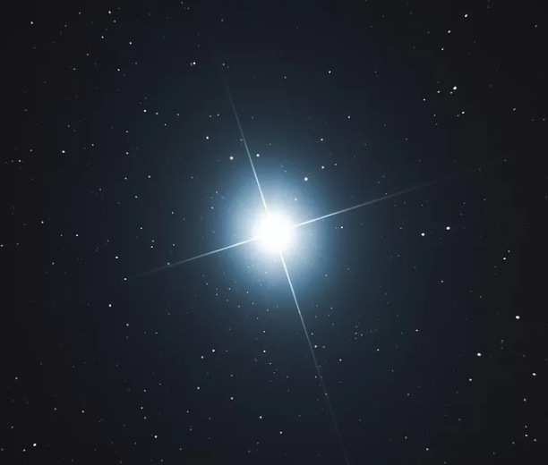
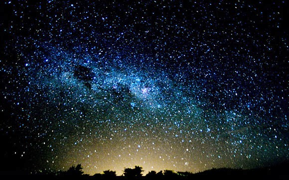
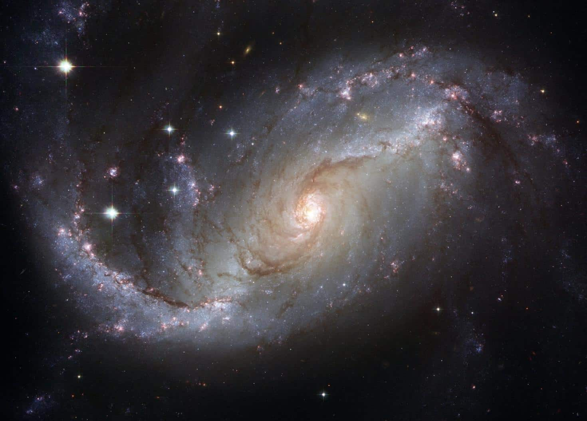

Os humanos ainda precisam entender muitos mistérios sobre o Universo. Mas algumas descobertas já se mostram surpreendentes.
1. Tudo o que vemos no espaço está no passado

2. Rios de hidrogênio espaciais abastecem galáxias

3. A estrela mais velha que o Universo


As estrelas são esferas de gás quente que nascem dentro de nebulosas. Estas, por sua vez, são nuvens de gás e poeira, como explica a agência norte-americana Nasa. Depois de milhares de anos, a própria gravidade faz com que as cavidades de matéria densa dentro da nebulosa entrem em colapso sob seu próprio peso.
Some representative placeholder content for the first slide.

Entre as muitas estruturas astronômicas impressionantes que povoam o cosmos, a Grande Muralha Hércules-Corona Borealis se destaca como uma das mais imponentes e enigmáticas e como a maior coisa que existe no universo.
Some representative placeholder content for the second slide.
Sirius, também conhecida como Sirius A e Alpha Canis Majoris, tem magnitude aparente (brilho de um objeto como ele aparece no céu, do ponto de vista da Terra) de -1,46 e está localizada na Constelação de Canis Major (Cão Maior), a cerca de 8,6 anos-luz de distância de nós
Some representative placeholder content for the third slide.